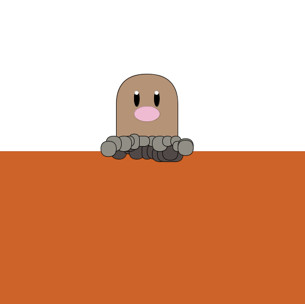
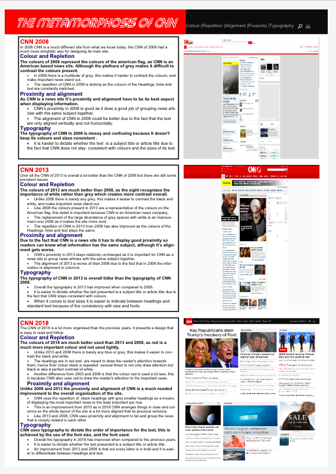

My projects
My projects are something that I take pride in as a perfectionist I try to put in my best into my project fortunately sometimes that displays in my work, but other times my effort is not transferred into the quality my work. I like to display my previous projects for all to see due to the fact that it not only show's others where I started from, but also how far I have come.
Digglet in eclipse
Code for Digglet in Eclipse

Poster for creative interactions
DVD Java Project

1 / 3
Digglet in eclipse
1 / 3
Code for Digglet in Eclipse
2 / 3
Poster for creative interactions
3 / 3
DVD Java Project